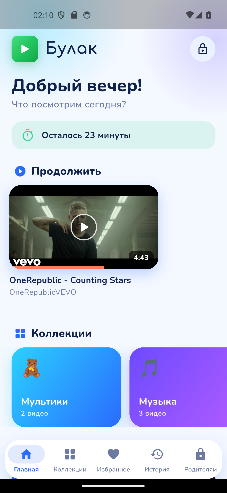
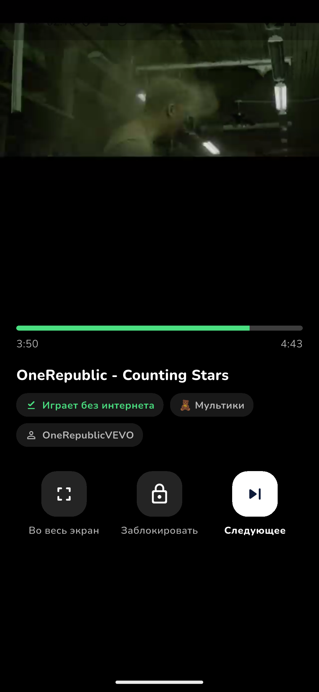
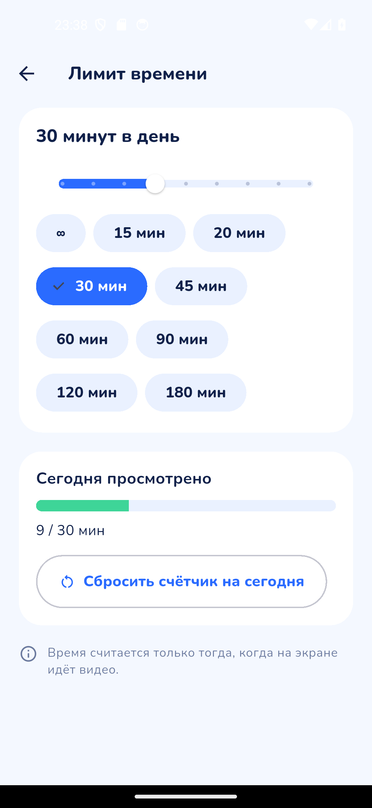
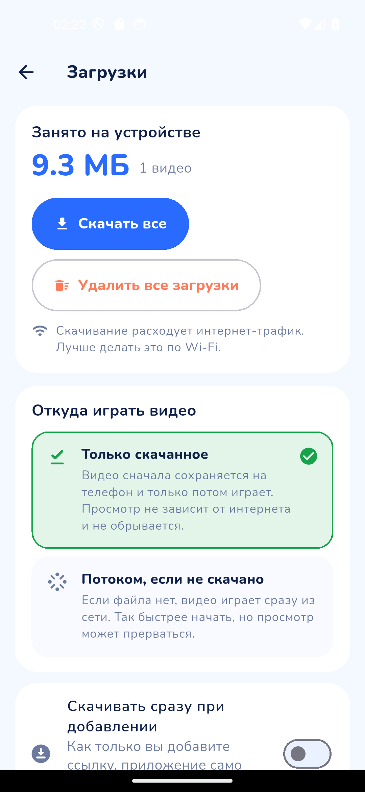

Сунуштар жок
Колдонмодо издөө, жазылуулар, кыска роликтер жана «сизге жагат» дегендер жок. Бала сиз кошкон нерселерди гана көрөт.
Балдар үчүн коопсуз видеоплеер
«Булакта» издөө да, сунуштар да, чексиз лента да жок. Сиз видеого шилтемелерди өзүңүз көчүрөсүз, колдонмо видеону телефонго жүктөйт — бала так ушул тизмени көрөт. Интернет жок болсо да.
Колдонмолор дүкөндөрүндө жеткиликтүү.

Эмнеге кадимки видеосервис эмес
Мультфильм бүткөндө видеосервис өзү кийинкисин койот, анан дагы бирин — бир саат өтүп кетет. «Булак» тескерисинче түзүлгөн: тизме кыска, ал бүтөт — жана бул кадимки нерсе.
Колдонмодо издөө, жазылуулар, кыска роликтер жана «сизге жагат» дегендер жок. Бала сиз кошкон нерселерди гана көрөт.
Видео телефондун эс тутумуна сакталат жана түзмөктөн ойнойт. Жолдо, дачада, учакта — баары бир.
Күнүнө 15 мүнөттөн 3 саатка чейин. Эсептегич көрүү учурунда гана жүрөт, ал эми убакыт бүткөндө — «Бүгүнгө болду» деген тынч экран.
Видео кошуу, жүктөө, өчүрүү же жөндөөлөрдү өзгөртүү улуулардын төрт орундуу коду менен гана мүмкүн.
Мүмкүнчүлүктөр
Бала үчүн тынч плеер жана ата-эне үчүн түшүнүктүү куралдар. Ашыкча нерсесиз.
Превью, аталышы жана узактыгы — бала билген видеосервистегидей, бирок тизме бүтөт.
«Мультфильмдер», «Музыка», «Сүйүктүү» — ар бир папканын өз эмодзиси жана түсү бар, бала керектүүсүн өзү табат.
Жүктөлгөн видео телефондон ойнойт: көрүү видеосервис азыр агым береби же жокпу — ага байланыштуу эмес.
15 мүнөттөн 3 саатка чейин. Убакыт бүттү — «Бүгүнгө болду» деген жылуу экран көрсөтүлөт.
Төрт сан кошууну, жүктөөнү жана жөндөөлөрдү жабат. «Кулпу» балага улууларсыз видеодон чыгууга же алдыга оролтууга жол бербейт.
Жүрөкчө сүйүктүү видеону сактайт, ал эми тарых эмне көрүлгөнүн жана кайсы жерде токтогонун көрсөтөт.
Башка ата-энеге шилтемелердин тизмесин текст же файл түрүндө жөнөтүңүз — ал аны өзүнө коюп, ошол эле видеолорду алат. Шилтемелер гана берилет, видеофайлдар эч жакка кетпейт.
Интерфейс англисчеге которулат — жана жарык же караңгы темага.
Бул кантип иштейт
«Нускама боюнча» эч нерсе жөндөөнүн кереги жок: колдонмо аталышын, авторун жана узактыгын өзү таап келет.
Видеого шилтемени көчүрүп, колдонмого коюңуз — бир нечесин да кошсо болот. «Булак» шилтемелерди текшерип, эмне тапканын көрсөтөт.
«Жүктөө» баскычын басыңыз — файл түзмөктөгү колдонмонун купуя папкасына сакталат. Жүктөөлөр экранында канча орун ээленгени көрүнөт.
Андан ары тармактын кереги жок: видео телефондон ойнойт, видеосервистин агымы иштебей калса да көрүү үзүлбөйт.
Скриншоттор
Чыныгы колдонмодон алынган кадрлар: китепкана, топтомдор, плеер жана ата-эне бөлүмү.





Ата-энелерге
«Булак» каттоо сурабайт жана статистика жыйнабайт. Колдонмодогу нерселердин баары телефондун өзүндө жатат.
Интернетсиз көрүү үчүн колдонмо видеофайлды сиздин телефонуңузга, колдонмонун купуя папкасына сактайт. Файл сиз өзүңүз өчүрмөйүнчө ошол жерде калат; интернет жүктөө учурунда гана керек.
Кандай видеолорду кошуп, сактаганыңыз жана видеосервистин колдонуу шарттарын сактаганыңыз үчүн жоопкерчилик улууларга жүктөлөт. «Булак» файлды сиздин түзмөгүңүзгө гана сактайт жана аны эч жакка бербейт.
Толук маалымат — купуялык политикасында. Суроолор жана сунуштар — info@mits.kg.
Суроолор
Бир нерсе жетишпей жатса — info@mits.kg дарегине жазыңыз.
Өзүбүздүн жарнагыбызды көрсөтпөйбүз: колдонмодо биздин баннерлер, кыстырмалар жана «промо» жок.
Видеосервис тууралуу да чындыкты айтабыз: видео анын расмий механизмдери аркылуу ойнотулат, эгер ролик сервистин ички плеери менен ойноп жатса, жарнакты видеосервис өзү көрсөтүшү мүмкүн. Биздин колдонмо муну менен эч нерсе таппайт.
Интернет бир жолу гана керек — шилтеме кошуу жана видеону телефонго жүктөө үчүн. Андан ары файл колдонмонун купуя папкасында жатат, ал эми көрүү толук интернетсиз иштейт: унаада, учакта, дачада.
Видеосервистен. Улуу киши видеого шилтемени көчүрүп, колдонмого коёт — ал аталышын, авторун жана узактыгын таап келет.
Китепканага өзүнөн өзү эч нерсе кошулбайт: сунуш да, «популярдуу» да, башкалардын тизмеси да жок.
Ата-эне бөлүмүн ачып, төрт орундуу PIN киргизип, шилтемелерди коюңуз — ар бир сапка бирден, бир нечесин да кошсо болот.
Колдонмо шилтемелерди текшерет, аталышын, авторун жана узактыгын көрсөтөт, тандаганыңызды кошуп, топтомдорго бөлүштүрөт. Жүктөөнү азыр же кийинчерээк баштаса болот.
Ооба. Күнүмдүк чек 15 мүнөттөн 3 саатка чейин жөндөлөт, эсептегич көрүү учурунда гана жүрөт.
Убакыт бүткөндө бала «Бүгүнгө болду» деген тынч экранды көрөт — катуу эскертүүлөрсүз жана «улантуу» баскычы жок.
Китепкананы гана: превьюлуу чоң карточкалар, топтом-папкалар, сүйүктүүлөр жана тарых. Издөө да, сунуштар да, жазылуулар да, комментарийлер да, кыска роликтер да жок.
Плеерде — чоң, түшүнүктүү баскычтар жана «кулпу»: улууларсыз видеодон чыгуу да, алдыга оролтуу да мүмкүн эмес.
Эч жакка. Колдонмодо аккаунттар, каттоо, аналитика жана трекерлер жок. Шилтемелердин тизмеси жана жөндөөлөр телефондун эс тутумунда, жүктөлгөн видеолор колдонмонун купуя папкасында сакталат.
Колдонмо тармакка видеосервистин серверлерине гана кайрылат — превью жана видеофайл үчүн. Толук маалымат купуялык политикасында жазылган.
Эч нерсе. Колдонмо акысыз: жазылуусуз, ичиндеги сатып алуусуз жана «премиум» версиясыз.
Android 6.0 жана андан жаңыраак, ошондой эле iOS 13 жана андан жаңыраак iPhone жана iPad. Интерфейс орусча менен англисче ортосунда которулат.
Башка балдар видеоприложениелери — бул видеолор автоматтык түрдө тандалган өзүнчө лента. «Булак» эч нерсе тандабайт: бала көргөн нерсенин баарын сиз өз колуңуз менен кошконсуз.
Айырмасы ушунда: чексиз лента жок, башкалардын каналдары жок, сунуштар жок жана биздин жарнак жок. Ал эми PIN-коддуу күнүмдүк убакыт чеги бар.
«Булак» азыр жүктөп алса болот. Бирдеңе иштебей жатса же каалооңуз болсо — бизге жазыңыз, жеке жооп беребиз.
суроолор жана каалоолор: info@mits.kg